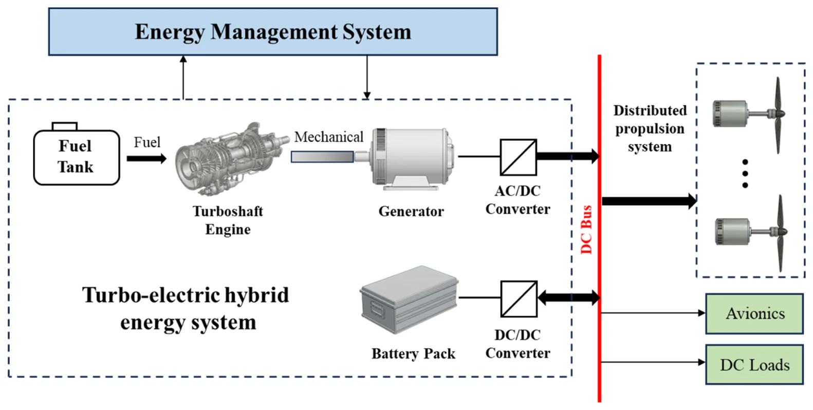
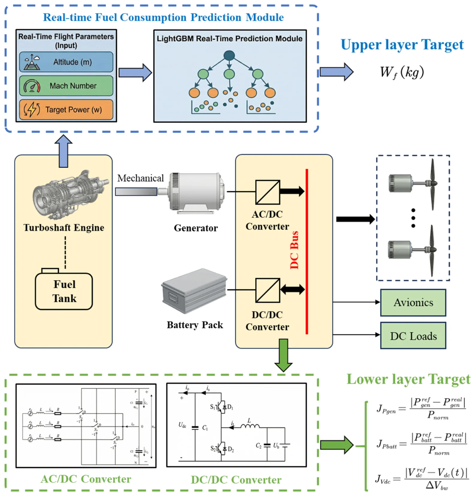
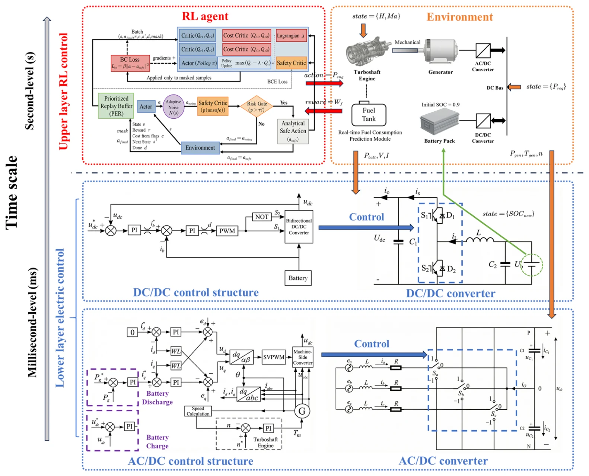
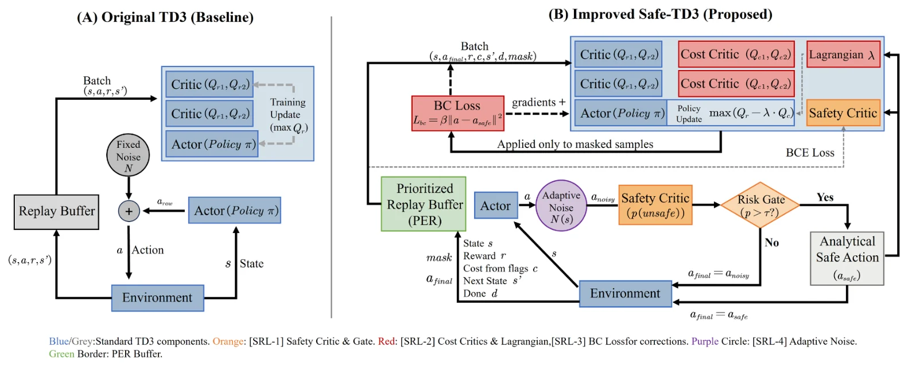

EMS-3 · Article · 2026
Hierarchical energy management for turbo-electric eVTOL via multi-constraint safe-TD3 and power electronic stability control
基于多约束 Safe-TD3 与电力电子稳定控制的涡轮电 eVTOL 分层能量管理（中文意译）
* Corresponding author.
Aerospace Science and Technology 177 (2026) 112319
Received 7 January 2026 · Revised 20 March 2026 · Accepted 7 April 2026 · Available online 8 April 2026
DOI: 10.1016/j.ast.2026.112319
Keywords Turbo-electric eVTOL; Energy Management Strategy (EMS); Safe Deep Reinforcement Learning (Safe-TD3); Hierarchical Control; Power Electronics Stability
Abstract
摘要
Turbo-electric vertical take-off and landing (eVTOL) aircraft impose a critical multi-scale control challenge, necessitating the simultaneous assurance of propulsion energy efficiency and onboard power network stability. Traditional Deep Reinforcement Learning (DRL)-based Energy Management Strategies (EMS) often struggle with safety violations during exploration or rely heavily on manual prior knowledge guidance to ensure convergence. To address these limitations, this paper proposes a hierarchical safety-aware EMS framework. At the supervisory level, a novel Safe Twin Delayed Deep Deterministic Policy Gradient (Safe-TD3) algorithm is introduced to optimize power splitting between the turboshaft engine and the battery pack. Unlike conventional methods dependent on expert rules, the proposed Safe-TD3 intrinsically guarantees system safety through four integrated mechanisms: (1) a pre-execution Safety Critic for risk gating, (2) a Lagrangian relaxation method for soft cost constraints, (3) a correction-as-imitation mechanism to distill safe boundary actions, and (4) state-adaptive exploration noise. At the execution level, a high-fidelity physical model incorporating AC/DC and DC/DC converters with stable electrical control is developed to validate the transient response and bus voltage stability under the high-level directives. Extensive simulations and Hardware-in-the-Loop (HIL) experiments results show that the proposed method achieves near-optimal fuel economy with only a 0.20% gap to the global optimal benchmark DP and exhibits robust zero-shot generalization with a negligible 0.06% performance loss. Besides, it achieves low latency inference capabilities (<8 ms) on the embedded platform, which satisfies the real-time performance requirement in turbo-electric eVTOLs.
Overview
简要介绍
涡轮电 eVTOL 需要同时保证推进能量效率和机载电网稳定，是一个多时间尺度的控制问题。传统基于深度强化学习的能量管理在探索过程中容易越过安全边界，或者要依赖大量人工先验才能收敛。
论文提出基于时间尺度分离的主从分层安全能量管理框架。上层（秒级）由 Safe-TD3 决定涡轴发动机与电池之间的功率分配，并通过四个机制内生地保证安全：执行前的安全评论家风险门控；处理软代价约束的拉格朗日松弛；把安全修正后的边界动作作为模仿目标（correction-as-imitation）；以及随状态自适应的探索噪声。下层（毫秒级）建立含 AC/DC、DC/DC 变换器的高保真物理模型，用 PI 控制跟踪上层功率指令，检验暂态响应和直流母线电压稳定。
论文与 DP、MPC、ECMS、状态机（SM）、模糊逻辑（FL）以及 TD3、PPO、SAC、DDPG、DQN 进行比较，对四个安全机制逐项消融（SRL1–SRL4），检验“10 s 粗粒度训练 → 1 s 细粒度推理”的零样本时间尺度泛化，以及对初始 SOC 和未训练飞行包线的鲁棒性；最后在 Speedgoat 与 Jetson Orin 组成的 HIL 平台上验证实时性。
Figures
混动构型与模型图
本页只展示混动构型图和模型框图，不展示实验结果图表；完整内容见正式出版论文（DOI: 10.1016/j.ast.2026.112319）。图片截取自已发表论文，图题保留原文英文，下附简短中文说明，点击可查看原图。
混动构型

Fig. 1. Schematic of the hybrid propulsion system in the turbo-electric eVTOL.
涡轮电混动 eVTOL 推进系统：涡轴发动机–发电机经 AC/DC、电池经 DC/DC 接入直流母线。
Reproduced from F. Yu, P. Gao, J. Chen, X. Sun, J. Wang, Aerospace Science and Technology 177 (2026) 112319. https://doi.org/10.1016/j.ast.2026.112319. © 2026 Elsevier Masson SAS. All rights reserved. Shown on the first author’s academic homepage.
系统与方法模型

Fig. 2. Hierarchical hybrid power system performance model.
分层性能模型：上层为 LightGBM 实时油耗预测，下层为 AC/DC 与 DC/DC 变换器。
Reproduced from F. Yu, P. Gao, J. Chen, X. Sun, J. Wang, Aerospace Science and Technology 177 (2026) 112319. https://doi.org/10.1016/j.ast.2026.112319. © 2026 Elsevier Masson SAS. All rights reserved. Shown on the first author’s academic homepage.

Fig. 4. Master-slave collaborative hierarchical energy management framework.
主从协同分层框架：秒级 RL 上层与毫秒级电力电子控制下层。
Reproduced from F. Yu, P. Gao, J. Chen, X. Sun, J. Wang, Aerospace Science and Technology 177 (2026) 112319. https://doi.org/10.1016/j.ast.2026.112319. © 2026 Elsevier Masson SAS. All rights reserved. Shown on the first author’s academic homepage.

Fig. 5. Architectural comparison between the TD3 and the Safe-TD3 algorithm.
原始 TD3 与 Safe-TD3 的结构对比，标出四个安全机制（SRL-1 至 SRL-4）。
Reproduced from F. Yu, P. Gao, J. Chen, X. Sun, J. Wang, Aerospace Science and Technology 177 (2026) 112319. https://doi.org/10.1016/j.ast.2026.112319. © 2026 Elsevier Masson SAS. All rights reserved. Shown on the first author’s academic homepage.
Reported Results
论文中报告的主要结果
- 燃油消耗：Safe-TD3 为 50.480 kg，比 DP 基准（50.377 kg）高 0.20%；MPC、ECMS、SM、FL 分别高 1.12%、2.95%、3.78%、3.51%（原文表 3）。
- 从 10 s 训练迁移到 1 s 推理，零样本泛化损失为 0.06%；TD3 基线为 1.13%（原文表 4）。
- 论文结论报告，Safe-TD3 在仿真中消除了致命的边界越界，并对初始 SOC 扰动和不同飞行包线保持鲁棒（原文图 11）。
- 下层执行层能在上层指令下跟踪功率并保持直流母线电压稳定（原文图 12、原文图 13）。
- 论文报告的 HIL 测试中，平均环路时延（通信 + 推理）为 6.14 ms，摘要表述为嵌入式平台推理时延低于 8 ms（原文图 15）。
以上 HIL 数据均为论文发表时报告的历史实验结果，本页只做展示，不连接任何实时硬件。
Citation & Rights
引用与版权
F. Yu, P. Gao, J. Chen, X. Sun, J. Wang, Aerospace Science and Technology 177 (2026) 112319. Hierarchical energy management for turbo-electric eVTOL via multi-constraint safe-TD3 and power electronic stability control. https://doi.org/10.1016/j.ast.2026.112319
本文由 Elsevier 出版，版权归出版社所有。本页图片在作者个人学术主页上展示并注明出处，不提供全文；全文请通过 DOI 访问正式出版版本。本页数字均来自原论文，是对已发表结果的展示，不是新的实验或比较。
本页仅展示混动构型图和模型框图（图 1, 2, 4, 5），不收录实验结果图表；实验结果、表格及完整内容请见 正式出版论文。